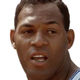

His teams reached the NBA Finals 3 times (1961-62 and 1967-68 to 1968-69) without winning the title. In his 765 games for 2 teams over 10 seasons they went 429–336 (56.1%), +93 games over .500, with an average final finish of 3.7.
Jump to: Record by opponent · Season by season · Teammate help
Compare Tom Hawkins with…
Suggested, same era and similar teammate help:
Final NBA finish, season by season
Title Finals Other playoffs Missed playoffs. #1 = champion; the dashed line is last place that season. Each point opens that season's final standings.
All 14 teams ranked in 1968-69, his best finish (#2)Teammate help

Elgin Baylor30.06 seasons Jerry West29.55 seasons
Jerry West29.55 seasons Oscar Robertson26.54 seasons
Oscar Robertson26.54 seasons
Seasons with help 8.2 to 13.8 (5): best finish #2 of 12, 1967-68, worst #6 of 10, 1966-67.
Career
Career records (W–L, W − L, with and without) include 2026-27 games through Nov. 23, 2026; season counts and finishes are through 2025-26. Each card opens its board in the same scope. How we count.

Latest completed seasons
Season by season
Newest first; every header sorts. Final NBA finish is the team's rank among all teams that season (#1 = champion) and opens that season's standings. "Without him" uses the team-season window; the span line counts only the games between his first and last game for the team.
| 1968-69 | #2 of 14 | 55–27 67.1% | Lost Finals 3–4 | 74 of 82 | 48–26 64.9% | 7–1 87.5%span: 7–1, gap −22.6 | −22.6 | |
| 1967-68 | #2 of 12 | 52–30 63.4% | Lost Finals 2–4 | 78 of 82 | 52–26 66.7% | 0–4 0.0%span: 0–4, gap +66.7 | +66.7 | |
| 1966-67 | #6 of 10 | 36–45 44.4% | Lost conf semis 0–3 SFW | 76 of 81 | 34–42 44.7% | 2–3 40.0%span: 2–3, gap +4.7 | +4.7 | |
| 1965-66 | Cincinnati3rd Eastern | #5 of 9 | 45–35 56.2% | Lost conf semis 2–3 | 79 of 80 | 45–34 57.0% | 0–1 0.0%span: 0–1, gap +57.0 | +57.0 |
| 1964-65 | Cincinnati2nd Eastern | #5 of 9 | 48–32 60.0% | Lost conf semis 1–3 | 79 of 80 | 47–32 59.5% | 1–0 100.0%span: 1–0, gap −40.5 | −40.5 |
| 1963-64 | Cincinnati2nd Eastern | #3 of 9 | 55–25 68.8% | Lost conf finals 1–4 | 73 of 80 | 50–23 68.5% | 5–2 71.4%span: 5–2, gap −2.9 | −2.9 |
| 1962-63 | Cincinnati3rd Eastern | #4 of 9 | 42–38 52.5% | Lost conf finals 3–4 | 79 of 80 | 41–38 51.9% | 1–0 100.0%span: 1–0, gap −48.1 | −48.1 |
| 1961-62 | #2 of 9 | 54–26 67.5% | Lost Finals 3–4 | 79 of 80 | 53–26 67.1% | 1–0 100.0%span: 1–0, gap −32.9 | −32.9 | |
| 1960-61 | #4 of 8 | 36–43 45.6% | Lost conf finals 3–4 STL | 79 of 79 | 36–43 45.6% | N/A | N/A | |
| 1959-60 | Minneapolis3rd Western | #4 of 8 | 25–50 33.3% | Lost conf finals 3–4 STL | 69 of 75 | 23–46 33.3% | 2–4 33.3%span: 2–4, gap 0.0 | 0.0 |
Teammate help by season
Help this season = Teammates Score points for honors won that season by teammates who shared a game with him, with every teammate that adds to it. Only honors won in that same season count. How help works.
- 1968-69
 LA Lakers
Jerry West Finals MVPAll-NBA 2ndAll-StarAll-Def 2nd14.553 gElgin Baylor All-NBA 1stAll-Star568 g
LA Lakers
Jerry West Finals MVPAll-NBA 2ndAll-StarAll-Def 2nd14.553 gElgin Baylor All-NBA 1stAll-Star568 g Wilt Chamberlain All-Star173 gBill Hewitt All-Rookie 1st0.2567 g
Wilt Chamberlain All-Star173 gBill Hewitt All-Rookie 1st0.2567 g
Help this season: 20.75 = 14.5 Jerry West + 5 Elgin Baylor + 1 Wilt Chamberlain + 0.25 Bill Hewitt
Other teammates (no honors that season): Johnny Egan 74 g, Freddie Crawford 73 g, Keith Erickson 69 g, Mel Counts 69 g, Cliff Anderson 32 g, Jay Carty 25 g
- 1967-68LA Lakers
Elgin Baylor All-NBA 1stAll-Star574 gJerry West All-NBA 2ndAll-Star449 gArchie Clark All-Star177 g
Help this season: 10 = 5 Elgin Baylor + 4 Jerry West + 1 Archie Clark
Other teammates (no honors that season): Darrall Imhoff 78 g, Mel Counts 78 g, Gail Goodrich 75 g, Dennis Hamilton 40 g, Erwin Mueller 39 g, Jim Barnes 38 g, Freddie Crawford 37 g, John Wetzel 36 g, Cliff Anderson 14 g
- 1966-67LA Lakers
Elgin Baylor All-NBA 1stAll-Star565 gJerry West All-NBA 1stAll-Star561 gDarrall Imhoff All-Star176 g
Help this season: 11 = 5 Elgin Baylor + 5 Jerry West + 1 Darrall Imhoff
Other teammates (no honors that season): Jim Barnes 75 g, Walt Hazzard 74 g, Gail Goodrich 72 g, Archie Clark 72 g, Jerry Chambers 63 g, Rudy LaRusso 41 g, Mel Counts 30 g, Hank Finkel 25 g, John Block 22 g
- 1965-66Cincinnati
 Jerry Lucas All-NBA 1stAll-Star578 gOscar Robertson All-NBA 1stAll-Star575 gAdrian Smith All-StarAll-Star MVP1.579 g
Jerry Lucas All-NBA 1stAll-Star578 gOscar Robertson All-NBA 1stAll-Star575 gAdrian Smith All-StarAll-Star MVP1.579 g
Help this season: 11.5 = 5 Jerry Lucas + 5 Oscar Robertson + 1.5 Adrian Smith
Other teammates (no honors that season): Wayne Embry 79 g, Jon McGlocklin 72 g, Happy Hairston 71 g, Jack Twyman 70 g, Connie Dierking 56 g, Tom Thacker 48 g, George Wilson 43 g, Art Heyman 11 g, Bud Olsen 4 g, Jay Arnette 3 g
- 1964-65Cincinnati
Jerry Lucas All-NBA 1stAll-StarAll-Star MVP5.566 gOscar Robertson All-NBA 1stAll-Star574 gWayne Embry All-Star174 g
Help this season: 11.5 = 5.5 Jerry Lucas + 5 Oscar Robertson + 1 Wayne Embry
Other teammates (no honors that season): Jack Twyman 79 g, Adrian Smith 79 g, Bud Olsen 78 g, Jay Arnette 62 g, Happy Hairston 60 g, Tom Thacker 54 g, George Wilson 38 g, Bucky Bockhorn 19 g
- 1963-64Cincinnati
Oscar Robertson MVPAll-NBA 1stAll-StarAll-Star MVP11.572 gJerry Lucas All-NBA 2ndAll-StarROYAll-Rookie 1st4.7572 gWayne Embry All-Star173 g
Help this season: 17.25 = 11.5 Oscar Robertson + 4.75 Jerry Lucas + 1 Wayne Embry
Other teammates (no honors that season): Jack Twyman 64 g, Bucky Bockhorn 63 g, Adrian Smith 59 g, Tom Thacker 44 g, Jay Arnette 43 g, Bud Olsen 42 g, Larry Staverman 34 g, Bob Boozer 25 g
- 1962-63Cincinnati
Oscar Robertson All-NBA 1stAll-Star579 gJack Twyman All-Star179 gWayne Embry All-Star175 g
Help this season: 7 = 5 Oscar Robertson + 1 Jack Twyman + 1 Wayne Embry
Other teammates (no honors that season): Hub Reed 79 g, Bucky Bockhorn 79 g, Adrian Smith 78 g, Bob Boozer 78 g, Bud Olsen 50 g, Dave Piontek 48 g, Dan Tieman 30 g, Joe Buckhalter 3 g
- 1961-62LA Lakers
Jerry West All-NBA 1stAll-Star574 gElgin Baylor All-NBA 1stAll-Star547 gFrank Selvy All-Star178 g
Help this season: 11 = 5 Jerry West + 5 Elgin Baylor + 1 Frank Selvy
Other teammates (no honors that season): Rudy LaRusso 79 g, Ray Felix 79 g, Jim Krebs 77 g, Hot Rod Hundley 77 g, Howie Jolliff 63 g, Wayne Yates 37 g, Bob McNeill 28 g, Bob Sims 18 g, Bobby Smith 3 g
- 1960-61LA Lakers
Elgin Baylor All-NBA 1stAll-Star573 gHot Rod Hundley All-Star179 gJerry West All-Star179 g
Help this season: 7 = 5 Elgin Baylor + 1 Hot Rod Hundley + 1 Jerry West
Other teammates (no honors that season): Rudy LaRusso 79 g, Ray Felix 78 g, Frank Selvy 77 g, Jim Krebs 75 g, Slick Leonard 55 g, Howie Jolliff 43 g, Gary Alcorn 20 g, Ron Johnson 8 g
- 1959-60Minneapolis
Elgin Baylor All-NBA 1stAll-Star565 gHot Rod Hundley All-Star167 gDick Garmaker All-Star140 g
Help this season: 7 = 5 Elgin Baylor + 1 Hot Rod Hundley + 1 Dick Garmaker
Other teammates (no honors that season): Jim Krebs 69 g, Slick Leonard 67 g, Rudy LaRusso 65 g, Larry Foust 43 g, Boo Ellis 43 g, Frank Selvy 42 g, Ray Felix 29 g, Ed Fleming 23 g, Steve Hamilton 11 g, Bobby Smith 10 g, Nick Mantis 10 g, Charlie Share 3 g, Ron Sobiezczyk 1 g
Record against each opponent
- Best regular-season record against one franchise: 65–26 (71.4%) against the New York Knicks in 91 games.
- Toughest regular-season record against one franchise: 33–58 (36.3%) against the Boston Celtics in 91 games.
- Most playoff series against one franchise: 6 against the Boston Celtics, 0–6 in series and 14–23 in games.
Regular season, through 2025-26 (2026-27 games not included): 765 games, 429–336, against 14 franchises.
Grouped by franchise (named as today); game lists keep each team's name that season. Filters and the tab are kept in the URL, so a filtered view can be shared.
| Games list | |||||||
|---|---|---|---|---|---|---|---|
| 95 | 59–36 | 62.1% | +23 | 3–0 (8–4 in games) | 1959-60 to 1968-69 | ||
| 93 | 50–43 | 53.8% | +7 | 1–2 (8–8 in games) | 1959-60 to 1968-69 | ||
| 91 | 33–58 | 36.3% | −25 | 0–6 (14–23 in games) | 1959-60 to 1968-69 | ||
| 91 | 65–26 | 71.4% | +39 | N/A | 1959-60 to 1968-69 | ||
| 86 | 42–44 | 48.8% | −2 | 2–1 (8–4 in games) | 1959-60 to 1968-69 | ||
| 86 | 39–47 | 45.3% | −8 | 2–1 (7–7 in games) | 1959-60 to 1968-69 | ||
| 68 | 44–24 | 64.7% | +20 | N/A | 1961-62 to 1968-69 | ||
| 57 | 35–22 | 61.4% | +13 | N/A | 1959-60 to 1968-69 | ||
| 37 | 17–20 | 45.9% | −3 | N/A | 1962-63 to 1965-66 | ||
| 23 | 14–9 | 60.9% | +5 | 1–0 (4–1 in games) | 1966-67 to 1968-69 | ||
| 14 | 13–1 | 92.9% | +12 | N/A | 1967-68 to 1968-69 | ||
| 14 | 9–5 | 64.3% | +4 | N/A | 1967-68 to 1968-69 | ||
| 5 | 4–1 | 80.0% | +3 | N/A | 1968-69 | ||
| 5 | 5–0 | 100.0% | +5 | N/A | 1968-69 |
Rows add up to his career record in his games. A playoff series counts when he played in it; early round-robin games show as games only. How we count.
Playoffs, with and without him
| 1968-69 | Lost in the NBA Finals 3–4 to | #2 of 14 | 14 of 18 | 9–5 64.3% | 2–2 50.0% | +14.3 | |
| 1967-68 | Lost in the NBA Finals 2–4 to | #2 of 12 | 15 of 15 | 10–5 66.7% | N/A | N/A | |
| 1966-67 | Lost in the conference semifinals 0–3 to San Francisco | #6 of 10 | 3 of 3 | 0–3 0.0% | N/A | N/A | |
| 1965-66 | Cincinnati | Lost in the conference semifinals 2–3 to | #5 of 9 | 5 of 5 | 2–3 40.0% | N/A | N/A |
| 1964-65 | Cincinnati | Lost in the conference semifinals 1–3 to | #5 of 9 | 4 of 4 | 1–3 25.0% | N/A | N/A |
| 1963-64 | Cincinnati | Lost in the conference finals 1–4 to | #3 of 9 | 10 of 10 | 4–6 40.0% | N/A | N/A |
| 1962-63 | Cincinnati | Lost in the conference finals 3–4 to | #4 of 9 | 12 of 12 | 6–6 50.0% | N/A | N/A |
| 1961-62 | Lost in the NBA Finals 3–4 to | #2 of 9 | 13 of 13 | 7–6 53.8% | N/A | N/A | |
| 1960-61 | Lost in the conference finals 3–4 to St. Louis | #4 of 8 | 12 of 12 | 6–6 50.0% | N/A | N/A | |
| 1959-60 | Minneapolis | Lost in the conference finals 3–4 to St. Louis | #4 of 8 | 8 of 9 | 4–4 50.0% | 1–0 100.0% | −50.0 |
Arrival and departure
Team wins per 82 games the season before he arrived vs his first season there, and his last season vs the season after he left. He leaves a team only when his next season with games is for another team (or he never plays again); whole seasons he missed and came back from are one "Missed" row with the team's record without him. Per 82 so short seasons compare fairly. These are team records, not a measure of what he did.
| Left | after 1968-69 | 1968-69: 55–27 55.0 per 82 | 1969-70: 46–36 46.0 per 82 without him | −9.0 wins | |
| Arrived | 1966-67 | 1965-66: 45–35 46.1 per 82 | 1966-67: 36–45 36.4 per 82 | −9.7 wins | |
| Left | Cincinnati | after 1965-66 | 1965-66: 45–35 46.1 per 82 | 1966-67: 39–42 39.5 per 82 without him | −6.6 wins |
| Arrived | Cincinnati | 1962-63 | 1961-62: 43–37 44.1 per 82 | 1962-63: 42–38 43.1 per 82 | −1.0 wins |
| Left | after 1961-62 | 1961-62: 54–26 55.4 per 82 | 1962-63: 53–27 54.3 per 82 without him | −1.0 wins | |
| Debut | Minneapolis | 1959-60 | 1958-59: 33–39 37.6 per 82 | 1959-60: 25–50 27.3 per 82 | −10.2 wins |
Best duos
Team record in regular-season games both played, top 10 by win %, at least 50 games together.
- Freddie Crawford 76–34 69.1%
- Keith Erickson 45–24 65.2%
- Johnny Egan 48–26 64.9%
- Wilt Chamberlain
47–26 64.4%
- Bill Hewitt 43–24 64.2%
- Jay Arnette 69–39 63.9%
- Mel Counts 112–65 63.3%
- Bud Olsen 108–66 62.1%
- Jerry Lucas
134–82 62.0%
- Happy Hairston 79–52 60.3%
With and without his teammates
His 12 teammates with the most regular-season games together. "Together" is the team's record in the games both played for it; "Without him" is the team's record in the games Tom Hawkins played for that team while the teammate was on it (between the teammate's first and last game for the team, the appearance span) and the teammate did not play. Fewer than 20 games without him: no gap. Games through Nov. 23, 2026. How we count.
- Elgin BaylorMinneapolis 1959-60;LA Lakers 1960-61 to 1961-62; LA Lakers 1966-67 to 1968-69
- Together
- 213–179 54.3%
- Without him
- 30–30 50.0%
- Gap
- 4.3 points lower
- Jerry WestLA Lakers 1960-61 to 1961-62; LA Lakers 1966-67 to 1968-69
- Together
- 186–130 58.9%
- Without him
- 25–19 56.8%
- Gap
- 2.0 points lower
- Wayne EmbryCincinnati 1962-63 to 1965-66
- Together
- 177–124 58.8%
- Without him
- 6–3 66.7%
- Gap
- Too few games without him
- Oscar RobertsonCincinnati 1962-63 to 1965-66
- Together
- 180–120 60.0%
- Without him
- 3–6 33.3%
- Gap
- Too few games without him
- Adrian SmithCincinnati 1962-63 to 1965-66
- Together
- 171–124 58.0%
- Without him
- 12–3 80.0%
- Gap
- Too few games without him
- Jack TwymanCincinnati 1962-63 to 1965-66
- Together
- 170–122 58.2%
- Without him
- 13–5 72.2%
- Gap
- Too few games without him
- Rudy LaRussoMinneapolis 1959-60;LA Lakers 1960-61 to 1961-62; LA Lakers 1966-67
- Together
- 128–136 48.5%
- Without him
- 1–3 25.0%
- Gap
- Too few games without him
- Hot Rod HundleyMinneapolis 1959-60;LA Lakers 1960-61 to 1961-62
- Together
- 109–114 48.9%
- Without him
- 3–1 75.0%
- Gap
- Too few games without him
- Jim KrebsMinneapolis 1959-60;LA Lakers 1960-61 to 1961-62
- Together
- 107–114 48.4%
- Without him
- 5–1 83.3%
- Gap
- Too few games without him
- Jerry LucasCincinnati 1963-64 to 1965-66
- Together
- 134–82 62.0%
- Without him
- 8–7 53.3%
- Gap
- Too few games without him
- Frank SelvyMinneapolis 1959-60;LA Lakers 1960-61 to 1961-62
- Together
- 103–94 52.3%
- Without him
- 2–2 50.0%
- Gap
- Too few games without him
- Ray FelixMinneapolis 1959-60;LA Lakers 1960-61 to 1961-62
- Together
- 99–87 53.2%
- Without him
- 1–0 100.0%
- Gap
- Too few games without him